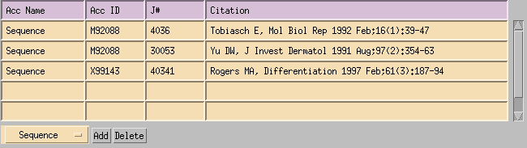

MGI EDITING INTERFACE: Design and Requirements
MGI EDITING INTERFACE: Design and Requirements
Introduction:
The MGI Editorial Interfaces (MEI) provide users with a user-friendly,
intuitive interface for entering MGD-specific, GXD-specific data, NOMEN-specific and MGI-specific data.
There are currently four MGI Editorial Interface applications:
- MGD Editing Interface
- GXD Editing Interface
- MGI Admin Editing Interface
- Nomenclature Editing Interface
These interfaces are independent applications which share template components and D code.
Implementation Requirements:
- TeleUSE 3.1 and XRT PDS Volume 12
Table of Contents
- Logging In
- Entry Forms
- Accession Numbers
- Editing/Searching Accession Numbers
- Data Verifications
- Required Fields
- Defaults
- Table Processing
- Duplicate Names
- Deletions of Cross-Referenced Objects
- Nightly Reports
- Editorial Utilities (Broadcast, NLM update, etc.)
- Logs
- Running the Production Applications
- Running the Development Applications
- Triggers
- Views
- Stored Procedures
- Test Plan
- Release Process
- Editing Scope and Table Permissions
Logging In
Each application will present the user with a Login form. This provides the user
with an interface for logging into the Sybase Server. If the user does not have
a Sybase account, then the user should request one via WTS from the Database Administrator.
- Logging in to the Sybase Server/Database (GIF Image)
The first screen presented to the user is the Login screen.
The user selects the Server and Database from option menus, enters a User id
and Password, and then clicks Login. For security purposes, the Password is masked
on the screen so that it is not visible to the user.
The Server, Database, User and Password are used to establish a connection
to the database. If a connection cannot be made, an error message is displayed and
the login process is aborted. The Login screen remains active after an invalid login
attempt so that the user can continue to try to login.
Clicking Cancel in the Login screen exits the application.
If the user leaves the User and Password fields blank, then a default public
login is used. The public login has read-only permissions.
- Selecting data entry forms from the Main Menu
After a successful login, the Login screen is de-activated and a Main Menu is presented
to the user. Each selection on the Main Menu will instantiate a specific data entry form.
As a selection is made and a form is instantiated, the selection button is de-sensitized.
This prevents multiple instantiations of the same form. When a data entry form is exited,
the selection button for that form is re-sensitized so that a new instance of that form can be
created.
Entry Forms
There is one entry form for each main component of MGI:
- References
- Markers
- Molecular Probes & Segments
- Homology
- Mapping
- MLC
- Species
- Strains
- Tissues
- Crosses
- RI Sets
- Lookups (controlled vocabulary)
- Antigens
- Antibodies
- Assays
- Gel
- InSitu
- Images
- Anatomical Dictionary
- Index/Stages
- Lookups (controlled vocabulary)
- Actual/Logical DB
- Table/Column Comments
- Nomenclature
- References
- Markers
- Lookups (controlled vocabulary)
Each entry form enables the user to perform the following functions:
- Search
- Add
- Modify
- Delete
Accession Numbers
MGI Accession numbers are generated by the system and cannot be altered by the user.
They are in the format "MGI:#####", where the "MGI:" prefix is always present and the
numeric suffix is system generated.
The system generates MGI Accession Numbers for the following objects:
- References
- Markers
- Molecular Probes & Segments
- Mapping Experiments
- Antigens
- Antibodies
- Assays
- Images
An additional internal Accession Number, the J number, is generated for all
Reference objects. The J number is used for internal tracking of References.
External Accession Numbers are Accession Numbers assigned by other data resources
which can be cross-referenced to MGI objects. External Accession Numbers can be attached
and removed from any accessioned MGI object by the user.
Valid external Accession numbers include:
- Medline UI numbers can be attached to Reference objects.
- EC numbers can be attached to Marker objects.
- SWISS-PROT numbers can be attached to Marker objects.
- ATCC numbers can be attached to Antibody objects.
- NCBI (pid) numbers can be attached to Antigen objects.
A full listing of valid accession numbers for each MGI object is provided in the requirements document
for the MGI object.
Editing/Searching Accession Numbers
Every form which provides primary editing of an Accessionable object (Reference, Marker, Molecular Segment,
Mapping, Antigen, Antibody, Assay, Image) contains an Accession Table. Each Accession Table is configured to
only allow adds, modifications and searches for a specific set of Accession numbers, determined by the Data
Curation process.
The Accession Table of the Marker form is displayed below. The set of Accession numbers
for Markers is limited to MGI, EC (Enzyme Commission), SWISS-PROT and MGD-MRK (old-style MGI Accession
numbers).
All adds, modifications and searches are confined to the Accessionable object type being edited. In the
Marker form, only Marker Accession numbers can be modified or searched.
- To search:
- The search will be performed on the first Accession number encountered in the
table, starting with the first row.
- The search will only search the set of Accession numbers which do not contain
Reference associations. Some Accession numbers, such as Nucelotide Sequence
Accession numbers of Molecular Segments, are directly associated with a Reference.
Others, such as EC numbers of Markers, have no Reference associated with the
object/Accession number relationship.
- If the Accession number is entered in a row with a label (ex. MGD, EC, SWISS-PROT), then
only that subset of Accession numbers will be searched for the entered value. For example,
search constraints of "SWISS-PROT" and "q61726" entered in the Marker form Accession Table will
search for "q61726" within the SWISS-PROT subset only.
- If the Accession number is entered in a row without a label, then all subsets of
Accession numbers will be searched for the entered value.
For example, a search constraint of "q61726" entered in the Marker form
Accession Table in a row without a label will search for "q61726" within all Marker subsets.
This search may or may not return more results than the previous search, depending on whether
or not different Accession number sources use identical Accession numbers.
- To add:
- To modify:
- To delete:
Some forms may also contain an Accession Table which contains References (J:). The Accession Reference
Table adheres to the same search and modification rules as the regular Accession Table except that a
valid Reference is required for all adds and modifications and a search using an Accession number
entered in the Accession Reference Table will only search the set of Accession numbers which
contain Reference associations.
If Accession numbers are entered as search constraints in both the Accession Table and the
Accession Reference Table, only the first Accession number entered in the Accession Table is used
and any Accession numbers entered into the Accession Reference Table are ignored.

Data Verifications
Data verifications are initiated after the user enters the value into the
validated field and hits the TAB key. If the validated field is a table cell, then
a mouse click to another cell in the table also invokes the validation.
- J Numbers
- A J Number is validated against the Reference table (Master Bib).
- The Short Citation of the validated J Number is displayed on the form.
There may be exceptions due to the requirements of individual forms
or available space on the form. Refer to the requirements document
of an individual form for details on any exceptions.
- Modifications denied on invalid entries.
- Markers/Genes
- All Markers are validated against the Marker table.
- All Markers must be Mouse Markers.
- All Markers must be current (i.e. not withdrawn). Exceptions:
- Marker Histories may include withdrawn symbols.
- MLC queries may include withdrawn symbols.
- In some instances, additional information such as the chromosome or name of the Marker
is displayed.
- If a withdrawn Marker is entered, then valid Marker(s) for the withdrawn Marker are displayed.
- If a Marker which appears more than once in the database is entered (i.e. a duplicate),
then a list of the valid Markers from which to choose the appropriate Marker is displayed.
This includes information (such as chromosome) so that the unique Marker objects can be distinguished.
- Modifications denied on invalid entries.
- Marker Alleles
- All Alleles are validated against the Marker Allele table.
- The Allele must be defined for the given Marker. In some instances,
if the Allele does not exist then the user is asked whether or not
to add the Allele to the Marker Allele table. The user may also enter the Allele
Name (some implementations may use a default value if no Allele Name is entered).
If the user elects to add the Allele, the new Allele is determined valid, else
the Allele is invalid.
- If no Marker is entered and the Allele is unique, then the Marker
associated with the Allele is entered automatically.
- Modifications denied on invalid entries.
- Non-Mouse Marker Chromosomes
- A non-mouse Marker's Chromosome is validated against the master Marker Chromosome
table.
- If the Chromosome does not exist in the master Marker Chromosome table,
the user is informed that the Chromosome will be added to the master table when
the current transaction is executed.
- Modifications allowed on invalid entries.
- Accession Numbers
Some objects may need to cross reference other MGI objects. For example, a Molecular
Probe may have been derived from another Clone. Therefore, the user may need to enter the
MGI Accession Number of the Parent Clone used during entry of a Molecular Probe object.
- An MGI Accession number is validated for a specific type only.
That is, the Parent Clone Accession Number field on the Molecular Probe & Segment
form only accepts valid Clone Accession Numbers.
- Accession numbers can be entered with or without the "MGI:" prefix.
That is, both "MGI:123456" and "123456" are valid entries for the same object.
- This verification applies to:
- Parent Clone Accession Numbers entered for a Molecular Probe
- Antibody Accession Numbers entered for an Assay Antibody Prep
- Probe Accession Numbers entered for an Assay Probe Prep
- Modifications denied on invalid entries.
- Antibodies
- If an Antibody is entered for the Antibody Prep of an Assay object for a
given Marker, then there must be a relationship between the Antibody and
the Marker (GXD_AntibodyMarker).
- If an Antibody is entered for the Antibody Prep of an Assay object with
an Assay Type of "Western blot", then the "Recognize Product in Western Blot"
must be equal to "Yes" for the Antibody.
- Warning displayed on invalid entries. Modifications allowed.
- Probes
- If a Probe is entered for the Probe Prep of an Assay object for a
given Marker, then there must be a relationship between the Probe and
the Marker (PRB_Marker).
- Warning displayed on invalid entries. Modifications allowed.
- Strains
- A Strain is validated against the Master Strain table.
- If a Strain does not exist, the user is asked whether or not
to add the Strain (as a non-standard) to the Master Strain
table. If the user elects to add the Strain, the new strain is
determined valid, else the strain is invalid.
- Modifications denied on invalid entries.
- Strains can also be selected from the
View->Strain Listing dialog.
This listing can be re-loaded by clicking on the label at the top of the dialog.
- Tissues
- A Tissue is validated against the Master Tissue table.
- If a Tissue does not exist, the user is asked whether or not
to add the Tissue (as a non-standard) to the Master Tissue
table. If the user elects to add the Tissue, the new tissue is
determined valid, else the tissue is invalid.
- Modifications denied on invalid entries.
- Tissues can also be selected from the
View->Tissue Listing dialog.
This listing can be re-loaded by clicking on the label at the top of the dialog.
- Cross Listing
- A non-anonymous Cross is validated against the Master Cross table.
- Non-anonymous Crosses are selected from the
View->Cross Listing dialog.
This listing can be re-loaded by clicking on the label at the top of the dialog.
- RI Listing
- An RI Set is validated against the Master RI Set table.
- RI Sets are selected from the
View->RI Set Listing dialog.
This listing can be re-loaded by clicking on the label at the top of the dialog.
- Age
- Age verifications adhere to the requirements discussed in the
MGI 1.0 Enhance Age Representation document.
- Dates
- A date must contain the year in the format YYYY.
- Option Menus
Option Menus provide data verification by default, since they provide the user with a single set
of pre-defined selections. Option Menus which correlate to normalized tables in the database are
dynamically built at runtime whenever a form is instantiated. The user must exit and re-enter
the form after any modification is made to the controlled vocabulary of the Option Menu to
view the recent modification.
Most controlled vocabulary is available to the user for editing:
- Homology Assays
- Mapping Assays
- MLC Classes
- Marker Types
- Reference Review Status
- Molecular Segment Vector Types
- Antibody Types
- Antibody Classes
- Assay Types
- Expression Patterns
- Expression Strengths
- Gel RNA Types
- Gel Units
- Gel Lane Control
- Image Field Types
- Antibody/Probe Prep Labels
- Probe Prep Label Coverages
- Probe Prep Sense Values
- Probe Prep Visualized Methods
- Secondary Antibody Preps
- Specimen Embedding Methods
- Specimen Fixation Methods
Some controlled vocabulary is not available to the users for editing.
This is due to the data storage implementation of this data. Edits to
the menu options for these lists must be handled by an SE.
- Reference Types
- Mouse Chromosomes
- Experiment Types
- Cross Types
- Species
- Age Prefixes
- Sex
- Physical Mapping Units
- Physical Mapping Arrangements
- MLC Mode
- Antibody Recognizes Product in Western Blot
- Antibody Recognizes Product in Immunoprecipitation
- Probe Prep Type
- Specimen Hybridization
- Lookup Lists
Lookup Lists are another way to implement controlled vocabulary and provide data verification
when an Option Menu does not suffice. When the number of selections is greater than 20, a
Lookup List is used. The user must always use the Lookup List, if one is supplied.
The user can refresh, or reload, the Lookup List by clicking on the Label of the Lookup List.
The Lookup List must be refreshed after any modification is made to the controlled vocabulary of
the Lookup List.
- MLC Classes*
- Molecular Probe & Segment Source Libraries
- Mapping Assays*
- Homology Assays*
- Homology Species
* signifies that this controlled vocabulary list can be modified using the Lookups form.
Required Fields
If a field is designated as Required, then a valid value must be entered into
the field before the modification can be processed.
Fields are designated as Required via a GUI presentation component attribute (widget) and
can only be changed by an SE.
A full listing of required fields for each MGI object is provided in the requirements document for that MGI object.
Defaults
Default values are used if the user clicks the Add button without choosing a value
for a specific field or if the user selects a specific value in a particular field.
The default for all controlled vocabulary is Not Specified. Exceptions are noted
in the requirements documents for individual MGI objects.
Table Processing
- The Table widget treats the mouse click as a TAB. If the user is in a table,
the user can use either the TAB key or the mouse click to validate the data within a
cell and move to another cell within the table.
The only time the user does not have to commit the cell edit is if the table is supporting the
entry of "X" in the cell. In this case, the edit of the cell is committed immediately and the user
does not have to TAB out of the cell.
- To use the arrow keys to move within the Table, the user must depress both the arrow key
and the control key.
- Add Row adds a row to the bottom of the table. If the table has an # column, this
column has the appropriate value assigned to it.
- Delete Row tags the currently selected row for deletion and clears the row so that
the user has a visual indication of the deletion. After the modification is executed,
this row no longer appears in the table.
- Insert Row adds a row to the table above the currently selected row. If the table has an # column, this
column has the appropriate value assigned to it.
- Edit Order allows the user to edit the # column of the table.
When the order, or sequence, of records in a table are significant, then the editing table has an
# column (usually this is the first column). The # column is initialized with values
and usually does not require any further editing by the user.
If the user wishes to edit the # column, then the user turns the Edit Order toggle ON.
This allows the user to edit the # column only. This mode is disabled by turning the Edit Order
toggle OFF, modifying the record, de-selecting the record or clearing the form.
The new orders are verified for uniqueness; duplicate order numbers are not allowed. Modifications denied on
invalid entries.
Duplicate Names
No requirement has been specified to disallow duplicate names of:
- Molecular Probes & Segments
- Antigens
- Antibodies
Deletions of Cross-Referenced Objects
Database triggers detect the attempt to delete an object which is referenced by
another object. In order to delete the desired object, all cross-references to that
object must be removed. A few instances are given below:
- A Reference which is referenced by a Marker, Molecular Segment, Homology, Experiment, MLC, or GXD object
cannot be deleted.
- A Marker which is referenced by a Molecular Segment, Homology, Experiment, MLC or GXD object cannot be deleted.
- A Tissue which is referenced by a Molecular Segment object cannot be deleted.
If a database trigger detects the deletion of a record which contains cross-references to other database objects,
an error message is displayed and the transaction is denied.
Logs
All SQL generated from an editing application is logged in a user log file within each
user's home directory. The sole purpose of this log is as a diagnostics aid
for the SE staff when debugging any problems which may arise with the applications.
| Application | Log File
|
|---|
| MGD Production | $HOME/.mgd-log and $HOME/.mgd_stats_log
|
| GXD Production | $HOME/.gxd-log
|
| Administration Production | $HOME/.mgiadmin-log
|
| Nomenclature Production | $HOME/.nomen-log
|
| MGD Development | $HOME/.mgd_dev-log and $HOME/.mgd_dev_stats_log
|
| GXD Development | $HOME/.gxd_dev-log
|
| Administration Development | $HOME/.mgiadmin_dev-log
|
| Nomenclature Development | $HOME/.nomen_dev-log
|
Running the Production Applications
All Production applications can be run from a either a Solaris Workstation or a MacIntosh.
To run the Production Applications from a Solaris Workstation:
xhost +
rsh titan
setenv DISPLAY <your hostname>:0
| Application | Script
|
|---|
| MGD | /usr/local/mgi/ei/mgd/runmgd&
|
| GXD | /usr/local/mgi/ei/gxd/rungxd&
|
| MGI Admin | /usr/local/mgi/ei/mgiadmin/runmgiadmin&
|
| Nomenclature | /usr/local/mgi/ei/nomen/runnomen&
|
- At the application login screen, type in your SYBASE login and password.
To run the Production Applications from a MacIntosh:
| Application | eXodus connections->
|
|---|
| MGD | MGD
|
| GXD | GXD
|
| MGI Admin | MGI Admin
|
| Nomenclature | Nomenclature
|
- At the first login screen, type in your UNIX login and password
- At the application login screen, type in your SYBASE login and password.
Running the Development Applications
All Development applications can be run from a either a Solaris Workstation or a MacIntosh.
To run the Development Applications from a Solaris Workstation:
xhost +
rsh kelso
setenv DISPLAY <your hostname>:0
| Application | Script
|
|---|
| MGD | /usr/local/mgi/ei/mgd/runmgd-dev&
|
| GXD | /usr/local/mgi/ei/gxd/rungxd-dev&
|
| MGI Admin | /usr/local/mgi/ei/mgiadmin/runmgiadmin-dev&
|
| Nomenclature | /usr/local/mgi/ei/nomen/runnomen-dev&
|
- At the application login screen, type in your SYBASE login and password.
To run the Development MGD from a MacIntosh:
| Application | eXodus connections->
|
|---|
| MGD | MGD Development
|
| GXD | GXD Development
|
| MGI Admin | MGI Admin Development
|
| Nomenclature | Nomenclature Development
|
- At the first login screen, type in your UNIX login and password
- At the application login screen, type in your SYBASE login and password.
Triggers
(kelso:$SYBASE/admin/triggers)
- ACC.tr, ACC.drop
Contains trigger definitions for Accession tables.
- BIB.tr, BIB.drop
Contains trigger definitions for Reference tables.
- CRS.tr, CRS.drop
Contains trigger definitions for Cross Lookup tables.
- HMD.tr, HMD.drop
Contains trigger definitions for Homology tables.
- MLD.tr, MLD.drop
Contains trigger definitions for Experiment tables.
- MRK.tr, MRK.drop
Contains trigger definitions for Marker tables.
- PRB.tr, PRB.drop
Contains trigger definitions for Molecular Probe & Segment tables.
- RI.tr, RI.drop
Contains trigger definitions for RI Set Lookup tables.
- GXD_CV.tr, GXD_CV.drop
Contains trigger definitions for Controlled Vocabulary tables.
- IMG.tr, IMG.drop
Contains trigger definitions for Image tables (IMG_).
- GXD.tr, GXD.drop
Contains trigger definitions for all other GXD tables.
- nomen/NOMEN.tr, nomen/NOMEN.drop
Contains trigger definitions for Nomenclature tables.
Views
(kelso:$SYBASE/admin/views)
- ACC.view
Contains view definitions for Accession tables.
- BIB.view
Contains view definitions for Reference tables.
- CRS.view
Contains view definitions for Cross Lookup tables.
- HMD.view
Contains view definitions for Homology tables.
- MLD.view
Contains view definitions for Experiment tables.
- MRK.view
Contains view definitions for Marker tables.
- PRB.view
Contains view definitions for Molecular Probe & Segment tables.
- SUM.view
Contains summary view definitions for Web Accession number query form.
- IMG.view
Contains view definitions for Image tables (IMG_).
- GXD.view
Contains view definitions for GXD tables (GXD_).
- SUM.view
Contains summary view definitions for Web Accession number query form.
- nomen/NOMEN.view
Contains view definitions for Nomenclature tables (nomen..).
Stored Procedures
(kelso:$SYBASE/admin/procedures)
- ACC.pr
Contains stored procedure definitions for Accession tables.
- BIB.pr
Contains stored procedure definitions for Reference tables.
- HMD.pr
Contains stored procedure definitions for Homology tables.
- MISC.pr
Contains stored procedure definitions for Miscellaneous things.
- MLC.pr
Contains stored procedure definitions for MLC tables.
- MLD.pr
Contains stored procedure definitions for Experiment tables.
- MRK.pr
Contains stored procedure definitions for Marker tables.
- MRKXfer.pr
Contains stored procedure definitions for Marker Transfer utility.
- PRB.pr
Contains stored procedure definitions for Molecular Probe & Segment tables.
- GXD.pr
Contains stored procedure definitions for GXD tables.
- nomen/NOMEN.pr
Contains stored procedure definitions for Nomenclature tables.
{kind=link}
{kind=link}
{kind=link}
{kind=link}
{kind=link}
{kind=link}
{kind=link}
{kind=link}
{kind=link}